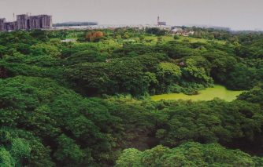
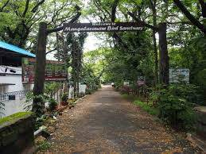
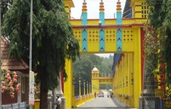
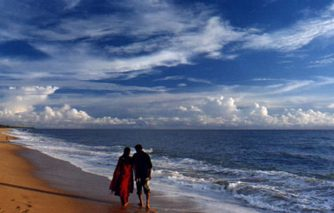

Ernakulam bordering the district of Thrissur in the north, Idukki in the East, Alapuzha and Kottayam in the south, Lakshadweep Sea in the west is an amalgam of a hoary heritage and global growth of industry and commerce. For the outside world, Ernakulam is part of Kochi referred to in the history of Kerala as the Queen of Arabian Sea. The densely populated Ernakulam District embodies the achievements of the Kerala State in literacy, industry, trade and commerce. With an inclusive culture, relatively high per capita income and an unstoppable interest of the people in updating themselves of the political, economic, social and cultural happenings in the national and international spheres, Ernakulam represents the high modern phase of the Kerala society.
ERNAKULAM
TOURIST PLACES
BOLGATTY PALACE

This is the oldest palace built by the Dutch outside the Kingdom of Holland. The palace was built by a Dutch merchant in 1744. Later, it was renovated with a magnificent lawn and a number of reforms. The palace served as the official residence of Dutch Governor.
Click here for moreMANGALAVANAM BIRD SANCTUARY
 Mangalavanam Bird Sanctuary is a bird sanctuary in the city of Palakkad district of Kerala state in India.It is located in the heart of Kochi city and has an area of 0.0274 sq km. A large number of migratory birds visit this place. Spiders and bats are the main attractions here. The Mangalavanam Bird Sanctuary which was established in 2004 is the smallest protected area under the state forest department.
Click here for moreHILL PALACE

.jpg)
Hill Palace, built in 1865, is the largest archaeological museum in Kerala and the administrative center of Cochin. The palace consists of 49 buildings in the local style of 54 acres and includes the Hill Palace Archaeological Museum, Heritage Museum, Deer Park, Prehistoric Park and Children’s Park. There are many medicinal plants around the palace. The Museum Hill Palace is now open to the public for days on Mondays. The Hill Palace is located at a distance of 14 km from Kochi. Hill Palace was built in 1865 by the Maharaja Of Cochin using his personal wealth.
Click here for moreFORT KOCHI

.jpg)
Fort Kochi, the western part of the Kochi city of Ernakulam district in Kerala. It is about 12 km away from Ernakulam Town. Fort Kochi has played an important role in the history of Kerala. Fort Kochi also has several attractions like the Santa Cruz Basilica. Fort Kochi also houses many historical monuments such as the St. Francis Church, the first church of Vasco da Gama, the Dutch Seminary, the China Vela and many others. The Indian Navy’s ship, Dronacharya, is located in Fort Kochi.
Click here for moreBHOOTHATHAANKETTU
.jpg)
Scenic dam site with boating facilities is situated in a vast virgin forest. It is a popular picnic sport with Salim Ali Bird Sanctuary near by.
Click here for moreCHERAI BEACH
.jpg)
Around two dozen kilometers from the industrial district of Ernakulam and to the side of the Vypeen Island lies every swimmer’s paradise, Cherai Beach. It is a favorite haunt of those looking for a relaxing swim with the backdrop of coconut groves being the added incentive. It provides a wonderful view of the famous Chinese Fishing Nets or Cheena Vala well. The nearby shacks provide you with fresh cuisine that fills you up perfectly after a delightful swim.
Click here for more